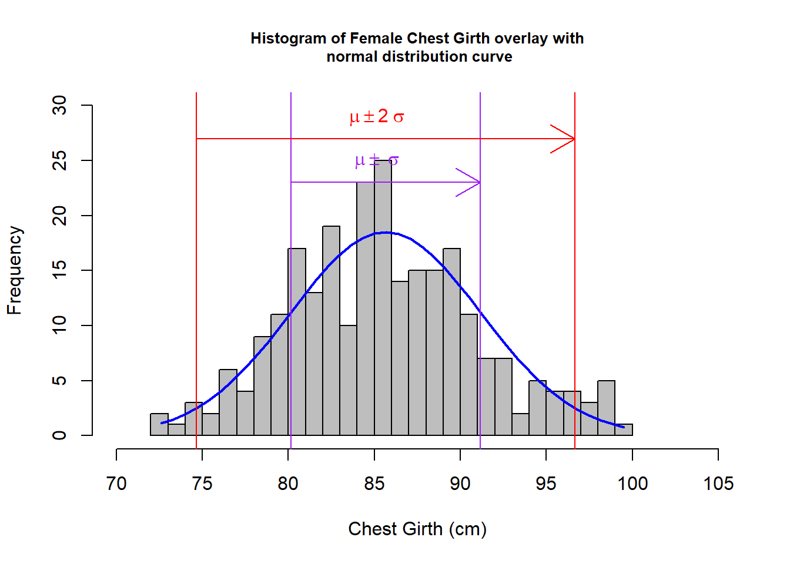
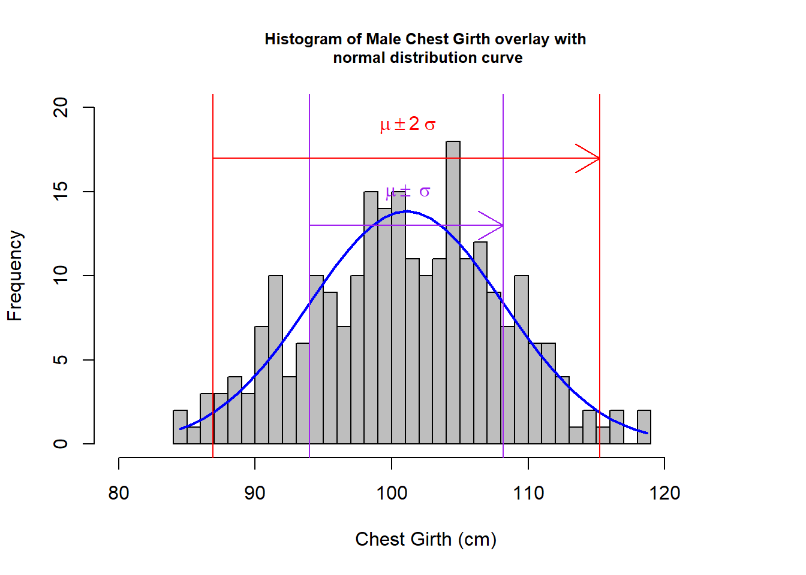
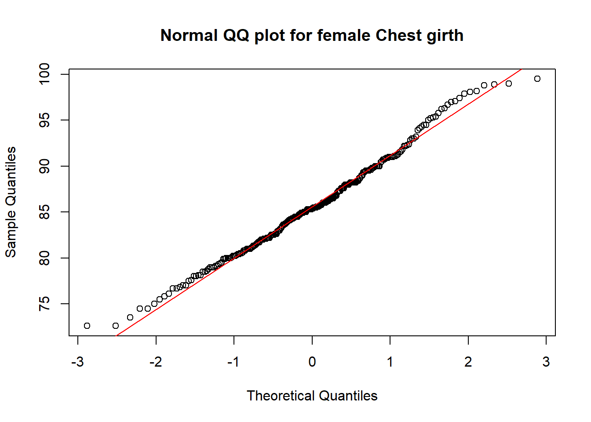

MATH1324 Assignment 1
Modeling Body Measurements
Student Details
Student Name: Millie Woo (s3806940)
Problem Statement
The body girth and skeletal diameter measurements, together with age, weight, height, and gender for 507 physically active individuals - 247 men and 260 women have been given in the “bdims.csv” file on RMIT canvas website. I have chosen one particular measurement, the chest girth, to investigate whether this measurement would fit into the normal distribution model. Following steps are involved:
- Find the descriptive statistics (e.g. mean, median, standard deviation, first and third quartile, interquartile range, minimum and maximum values) of the chest girth by sex
- Remove the outliner values, save this filtered data set
- Find the mean, standard deviation, min and max values again from the filtered data set
- Draw a histogram with the filtered data set, use the new statistics to draw a normal distribution curve over the histogram
- Examine whether the model fits into normal distribution by
- 68-95-99.7 Characteristics
- QQ-Plot
- Kolmogorov Smirnov test
Load Packages
Data
Import the body measurements data and prepare it for analysis as below:
# Only read in the data from che.gi (11th) and sex (25th) column of the bdims.csv file
bdims <- read_csv("src/bdims.csv", col_types ="----------d-------------i")
# Set the sex variable as factor. identify 1 = male, 0 = female
bdims$sex <- factor(bdims$sex, levels=c(1,0), labels=c("male","female"))Summary Statistics
Calculate the statistics and remove the outliners
#Filter bdims by sex, save into 2 dataframes and find the descriptive statistics respectively
m <- filter(bdims, bdims$sex=="male")
f <- filter(bdims, bdims$sex=="female")
kable(descr(m$che.gi, stats = c("mean", "med", "sd", "Q1", "Q3","IQR", "min", "max"), transpose = TRUE), caption = "Table 1 - statistics of chest girth for male")| Mean | Median | Std.Dev | Q1 | Q3 | IQR | Min | Max | |
|---|---|---|---|---|---|---|---|---|
| value | 100.9899 | 101 | 7.209018 | 95.9 | 106.1 | 10.1 | 79.3 | 118.7 |
kable(descr(f$che.gi, stats = c("mean", "med", "sd", "Q1", "Q3","IQR", "min", "max"), transpose = TRUE), caption = "Table 2 - statistics of chest girth for female")| Mean | Median | Std.Dev | Q1 | Q3 | IQR | Min | Max | |
|---|---|---|---|---|---|---|---|---|
| value | 86.06 | 85.5 | 6.170406 | 81.95 | 89.5 | 7.525 | 72.6 | 109 |
#Find the Upper and Lower Outliner of the chest girth for female and male
cgFQ <-quantile(f$che.gi, probs = c(0.25,0.75)); cgFIQR <- IQR(f$che.gi,na.rm = TRUE); cgFUpperO <- cgFQ[2] + 1.5* cgFIQR; cgFLowerO <- cgFQ[1] - 1.5* cgFIQR
cgMQ <-quantile(m$che.gi, probs = c(0.25,0.75)); cgMIQR <- IQR(m$che.gi,na.rm = TRUE); cgMUpperO <- cgMQ[2] + 1.5* cgMIQR; cgMLowerO <- cgMQ[1] - 1.5* cgMIQR
#Filter the values of the chest girth for both female and male which fall beyond the upper and lower outliner, save this into a data frame for distribution fitting
fNoO <- f %>% filter(che.gi < cgFUpperO & che.gi > cgFLowerO)
mNoO <- m %>% filter(che.gi < cgMUpperO & che.gi > cgMLowerO)
#Find the min, max, mean and SD of the chest girth for both female and male exclude the Outliner.
cgFNOMin <- round(min(fNoO$che.gi),3); cgFNOMax <- round(max(fNoO$che.gi),3); cgFNOMean <- round(mean(fNoO$che.gi),3); cgFNOSD <- round(sd(fNoO$che.gi),3)
cgMNOMin <- round(min(mNoO$che.gi),3); cgMNOMax <- round(max(mNoO$che.gi),3); cgMNOMean <- round(mean(mNoO$che.gi),3); cgMNOSD <- round(sd(mNoO$che.gi),3)
df <- data.frame(matrix(ncol = 4, nrow = 2));colnames(df) <- c("Min", "Max", "Mean", "SD"); rownames(df) <- c("Female", "Male"); df$Min <- c(cgFNOMin,cgMNOMin); df$Max <- c(cgFNOMax, cgMNOMax); df$Mean <- c(cgFNOMean, cgMNOMean); df$SD <- c(cgFNOSD, cgMNOSD)
kable(df, caption = "Table 3 - Min, Max, SD and Mean of Chest girth after removing the outliners")| Min | Max | Mean | SD | |
|---|---|---|---|---|
| Female | 72.6 | 99.5 | 85.656 | 5.500 |
| Male | 84.5 | 118.7 | 101.078 | 7.089 |
Distribution Fitting
Compare the empirical distribution of chest girth to a normal distribution separately in men and in women.
# Step 1: Draw the histogram with the filtered chest girth data for female
hf <- fNoO$che.gi %>% hist(col="grey",xlab="Chest Girth (cm)", main= "Histogram of Female Chest Girth overlay with\n normal distribution curve", breaks=25, xlim= c(70, 105), ylim = c(0, 30), cex.main = 0.8)
# Step 2: Use the seq function, generate 40 points on the x-axis between the min and max value of the filtered chest girth data for female, save this into a dataframe as the x-coordinates of our normal distribution curve
xffit<-seq(cgFNOMin,cgFNOMax,length=40)
# Step 3: Calculate the normal distribution of each x-coordinate, save this as the y-coordinates of our normal distribution curve
yffit<-dnorm(xffit,mean=cgFNOMean, sd=cgFNOSD)
# Step 4: Amplify each y-coordinate by multiplying
# 1) the difference between the first 2 midpoints of the histogram
# 2) no. of samples in the filtered chest girth data for female
yffit <- yffit*diff(hf$mids[1:2])*length(fNoO$che.gi)
# Step 5: Draw the curve of the normal distribution on top of the histogram of the filtered chest girth data for female
lines(xffit, yffit, col="blue", lwd=2)
# Step 6: Normal distribution, should be 68% lies between mean ± standard deviation and 95% lies between mean±2 * standard deviation; draw vertical lines (purple - 68%, red - 95%) to indicate that.
abline(v=(cgFNOMean - (2 *cgFNOSD)) ,col="red") ; abline(v=(cgFNOMean + (2 *cgFNOSD)),col="red"); abline(v=(cgFNOMean - cgFNOSD) ,col="purple") ;abline(v=(cgFNOMean + cgFNOSD),col="purple")
arrows(80.156, 23, 91.156, 23, col = "purple");arrows(74.656, 27, 96.656, 27, col = "red");text(85, 25, bquote(~mu %+-% ~sigma), col="purple");text(85, 29, bquote(~mu %+-% 2~sigma), col="red")
#Repeat Step 1 - 6 for Male filtered data set
hm <- mNoO$che.gi %>% hist(col="grey",xlab="Chest Girth (cm)", main= "Histogram of Male Chest Girth overlay with\n normal distribution curve", breaks=25, xlim= c(80, 125),ylim = c(0, 20), cex.main = 0.8)
xmfit<-seq(cgMNOMin,cgMNOMax,length=40)
ymfit<-dnorm(xmfit,mean=cgMNOMean,sd=cgMNOSD)
ymfit <- ymfit*diff(hm$mids[1:2])*length(mNoO$che.gi)
lines(xmfit, ymfit, col="blue", lwd=2)
abline(v=(cgMNOMean - (2 *cgMNOSD)) ,col="red") ; abline(v=(cgMNOMean + (2 *cgMNOSD)),col="red"); abline(v=(cgMNOMean - cgMNOSD) ,col="purple") ;abline(v=(cgMNOMean + cgMNOSD),col="purple")
arrows(93.989,13,108.167, 13, col = "purple");arrows(86.9, 17, 115.256, 17, col = "red");text(101, 15, bquote(~mu %+-% ~sigma), col="purple");text(101, 19, bquote(~mu %+-% 2~sigma), col="red")
#1. Compare the count of participants lie between mean ± standard deviation (i.e. Between Purple lines of the graphs shown in the above graph); and for those lies between mean±2 * standard deviation (i.e. Between Red line of the graphs shown in the above graph) with the 68-95-99.7 Characteristics in normal distribution. Summarise all the count in a table.
fNOPur <- filter(fNoO, fNoO$che.gi > (cgFNOMean - cgFNOSD) & fNoO$che.gi < (cgFNOMean + cgFNOSD)); fNOPurCount <- length(fNOPur$che.gi)
fNORed <- filter(fNoO, fNoO$che.gi > (cgFNOMean - 2 * cgFNOSD) & fNoO$che.gi < (cgFNOMean + 2 *cgFNOSD)) ;fNORedCount <- length(fNORed$che.gi)
mNOPur <- filter(mNoO, mNoO$che.gi > (cgMNOMean - cgMNOSD) & mNoO$che.gi < (cgMNOMean + cgMNOSD));mNOPurCount <- length(mNOPur$che.gi)
mNORed <- filter(mNoO, mNoO$che.gi > (cgMNOMean - 2 * cgMNOSD) & mNoO$che.gi < (cgMNOMean + 2 *cgMNOSD));mNORedCount <- length(mNORed$che.gi)
newdf <- data.frame(matrix(ncol = 7, nrow = 2))
colnames(newdf) <- c("# in original data", "# without outliners", "outliners #", "# without outliners (68%)", "# without outliners (95%)", "# within Purple", "# within Red"); rownames(newdf) <- c("Female", "Male"); newdf$`# in original data` <- c(length(f$che.gi), length(m$che.gi));newdf$`# without outliners` <- c(length(fNoO$che.gi), length(mNoO$che.gi));newdf$`outliners #`<- c(length(f$che.gi)-length(fNoO$che.gi), length(m$che.gi)-length(mNoO$che.gi));newdf$`# without outliners (68%)`<- c(round(0.68*length(fNoO$che.gi),0),round(0.68*length(mNoO$che.gi),0));newdf$`# without outliners (95%)` <- c(round(0.95*length(fNoO$che.gi),0),round(0.95*length(mNoO$che.gi),0));newdf$`# within Purple` <- c(fNOPurCount, mNOPurCount); newdf$`# within Red`<- c(fNORedCount, mNORedCount);
kable(newdf, caption = "Table 4 - Count (#) of participants of Chest girth")| # in original data | # without outliners | outliners # | # without outliners (68%) | # without outliners (95%) | # within Purple | # within Red | |
|---|---|---|---|---|---|---|---|
| Female | 260 | 255 | 5 | 173 | 242 | 180 | 239 |
| Male | 247 | 246 | 1 | 167 | 234 | 162 | 235 |
#2. Compare the data set with normal distribution using QQ Plot
qqnorm(fNoO$che.gi, main="Normal QQ plot for female Chest girth"); qqline(fNoO$che.gi, col='red')
qqnorm(mNoO$che.gi, main="Normal QQ plot for male Chest girth"); qqline(mNoO$che.gi, col='red')
#3. Apply Kolmogorov Smirnov test
ks.test(fNoO$che.gi, "pnorm", cgFNOMean, cgFNOSD)##
## One-sample Kolmogorov-Smirnov test
##
## data: fNoO$che.gi
## D = 0.046863, p-value = 0.63
## alternative hypothesis: two-sidedks.test(mNoO$che.gi, "pnorm", cgMNOMean, cgMNOSD)##
## One-sample Kolmogorov-Smirnov test
##
## data: mNoO$che.gi
## D = 0.037948, p-value = 0.8706
## alternative hypothesis: two-sidedInterpretation
From the above graphs, visually, I could see that for both male and female:
- the derived histograms fit resonably well to the normal distribution curves.
- the points in the normal QQ-plot are very close to the QQ-Line, which indicate a good fit with the normal distributions.
If we look closer to the filtered data set.
For female - outliner:1.923% (5 out of 260); 180 participants fall between \(\mu\) \(\pm\) \(\sigma\), which exceeds the 68% rule (68% of 255 is 173); 239 participants (93.72%) fall between \(\mu\) \(\pm\) 2\(\sigma\), which slightly falls behind the 95% rule (95% of 255 is 242).
For male - outliner:0.405% (1 out of 247); 162 participants (65.85%) fall between \(\mu\) \(\pm\) \(\sigma\) which slightly falls behind the 68% rule (68% of 246 is 167); 235 participants fall between \(\mu\) \(\pm\) 2\(\sigma\) which exceeds the 95% rule (95% of 246 is 234).
With the small percentage on the outliners, we can conclude the filtered data set is quite inclusive in the above investigation. The data fits quite well to the normal distribution except it slightly falls behind on the 68% (for male) and 95% (for female) confidence interval respectively. In the Kolmogorov-Smirnov test, for male: p-value = 0.8706; for female: p-value = 0.63, with these high Pr values, we would not reject \(h_{0}\), which is the hypothesis of no difference between the filtered chest girth data with normal distributions. As Male’s data has a higher p-value in the test, it fits even better to normal distributions.